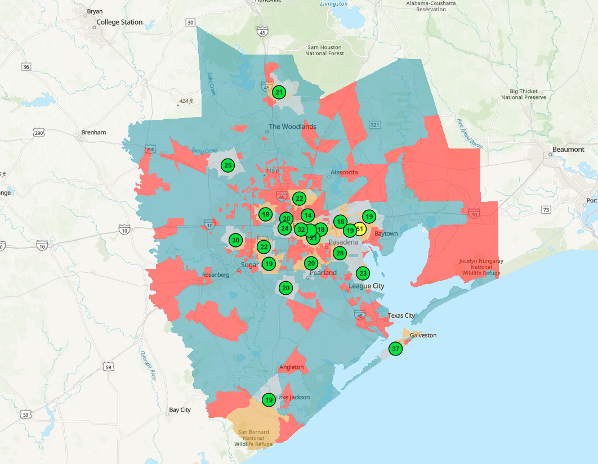

Live dashboard — air quality updates hourly from EPA AirNow. Best viewed full screen.
A standard air quality map tells you where the air is bad right now. It cannot tell you whether the communities least equipped to cope are the ones being watched. That is a fairness question, and it has two parts.
Where is the pollution burden, and where is the monitoring? When those two diverge, vulnerable neighborhoods can sit in a blind spot, exposed but unmeasured.
Which socially vulnerable communities in Houston-Galveston-Brazoria face the highest air pollution burden, yet lie farthest from the nearest air quality monitor?

Of the metro's 1,595 census tracts, 399 are "priority" tracts: both highly socially vulnerable and beyond neighborhood-scale monitoring coverage. They are not randomly scattered. They ring the metro along the industrial eastern corridor toward the Ship Channel and Baytown, and across the northern and outer fringes, while the regulatory monitors cluster in the central core.
The pattern is the finding: monitoring is concentrated where it already exists, and the vulnerable edge communities are the ones left uncovered. The burden is overwhelmingly concentrated in Harris County.
The dashboard answers two questions with different time signatures, so it is built in two halves.
The live operational layer pulls current air quality directly from the EPA AirNow hosted feature layer, which refreshes every hour. It drives the current maximum AQI, the count of monitors in the moderate range, and the ranked chart of the worst-air sites right now.
The structural equity layer rests on monitor locations and tract vulnerability, quantities that do not change hour to hour. Freezing them at analysis time loses nothing, because a monitor does not move and a neighborhood's vulnerability does not shift by lunchtime.
| Layer | Updates |
|---|---|
| Current max AQI | Hourly (live) |
| Monitors in moderate range | Hourly (live) |
| Worst-air sites chart | Hourly (live) |
| Priority-neighborhood map | Structural snapshot |
| Priority count by county | Structural snapshot |
Live AQI is used where time matters; monitor distance and vulnerability are used where the quantity is stable. Keeping them separate is the point, not a shortcut.
The equity layer is real spatial analysis, not two layers overlaid. Each step ran in ArcGIS Online:
- Create Buffers around every monitor at a 4 km radius, EPA's neighborhood scale of representativeness.
- Find Closest to compute the straight-line distance from each of the 1,595 tracts to its nearest monitor.
- Join Features to attach that distance to the CDC Social Vulnerability Index tract layer on the census FIPS code.
- Classify every tract with an Arcade expression into a 2×2 scheme crossing vulnerability (high if SVI ≥ 0.75) with coverage (under-monitored if > 4 km), producing the four-class bivariate map and the stored priority flag.
The classification cutoffs are not arbitrary. Each is grounded in federal guidance or peer-reviewed work, which is what makes the result defensible:
- High social vulnerability: CDC/ATSDR SVI 2022 overall percentile ≥ 0.75. This top national quartile is the exact break used by the CDC/ATSDR SVI Interactive Map and the most common cutoff in the environmental-justice literature.
- Monitoring desert: nearest monitor more than 4 km (about 2.5 miles) away. This is the upper bound of EPA's "neighborhood scale" of representativeness (40 CFR Part 58 Appendix D), and the same coverage radius applied to this exact regulatory network by Kelly et al. (2024) in JAMA Network Open.
- Classification: a 2×2 priority flag for the headline metric, paired with a bivariate choropleth for the map, following standard cartographic guidance to keep bivariate maps legible.
- Distance is measured straight-line, by design. The question is whether a monitor's sampled air parcel reaches a tract, which is a Euclidean concept. Because EPA's spatial scales are themselves defined as straight-line air-parcel dimensions, line distance is the construct-appropriate measure here, not a road-network travel distance.
Data: U.S. EPA AirNow (live hourly AQI); CDC/ATSDR Social Vulnerability Index 2022 (census tract); nearest-monitor distance computed in ArcGIS Online. Air quality is current as of viewing; vulnerability reflects the 2022 SVI release.
A screening tool is only as good as its honesty about what it cannot say:
- Live AQI is a preliminary, unvalidated hourly snapshot, shown for situational awareness, not regulatory determination. These values are not built into the tract analysis; the equity layer uses monitor locations and vulnerability, which are structural.
- Regulatory monitors are sited for regional compliance, not neighborhood exposure, so sparse coverage limits any claim about individual exposure.
- Tract-level results carry the ecological fallacy and the modifiable areal unit problem: a tract average is not an individual's experience, and results can shift with the choice of spatial unit.
- SVI is a relative national ranking, so "high vulnerability" means high relative to all US tracts. HGB skews more vulnerable than the national median, which is part of why the priority count is large; a stricter cutoff (SVI ≥ 0.90) would isolate a smaller, more acute set of tracts.
ArcGIS Online (Map Viewer, hosted feature layers, spatial analysis: Create Buffers, Find Closest, Join Features), ArcGIS Dashboards (indicators, serial charts, bivariate symbology, filters), Arcade expressions (derived classification and dashboard logic), live-feed integration, multi-source spatial data integration across federal air quality, federal vulnerability, and census geography, and cartographic design for an equity audience.
Open the live dashboard
Real-time air quality and the full monitoring-equity analysis, interactive and public on ArcGIS Online.